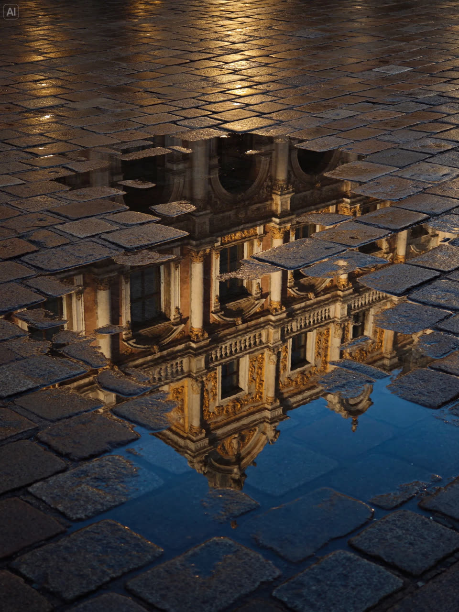

Seedream 5.5 official: after-rain street, low angle down into puddles reflecting a golden carved façade, warm gold against deep blue
MOO-071MoodSeedream 5.5 (ByteDance Seed; official model-page example)by ByteDance Seed (official Seedream 5.5 model page)2026-11-09

An official mood frame built entirely from reflections. The camera looks down at wet paving stones, the old building appears only as fragments "by exposed stones, puddle edges and ripples", and the palette is set as a contrast ("Warm golden light contrasts with deep-blue reflections"). The final negative ("No full building, people or vehicles appear") keeps it abstract. A clean template for a quiet, romantic city-after-rain establishing frame or end card.
Prompt
A vertical 3:4 street photograph after rain, taken from a low angle looking down at wet paving stones and irregular puddles. Reflections of an old building’s golden carvings, window frames and colonnades are fragmented by exposed stones, puddle edges and ripples. Warm golden light contrasts with deep-blue reflections, preserving worn joints and wet surface textures. No full building, people or vehicles appear.
Our Seedance 2.5 adaptation
[ADAPTED for Seedance 2.5 by Grok Bot; not the creator's prompt. Follows the official BytePlus Seedance 2.5 prompt guide and its official sd25-pe prompt-optimizer skill: parameters only on the API line (not in the prompt body), subject + action + scene, then visuals, camera (move, subject, start, direction, arrival) and sound; only the source's own exclusions are kept.] API: duration 8, ratio 9:16, resolution 1080p, generate_audio true. 【Scene】Wet paving stones and irregular puddles just after rain; the puddles reflect an old building's golden carvings, window frames and colonnades. 【Action】A last drop falls into the largest puddle; ripples break the golden reflection into fragments, then it slowly settles back. 【Camera】Low angle looking down at the stones, a very slow forward creep over the puddle edges, arriving with the largest reflection filling the frame. 【Visuals】Warm golden light against deep-blue reflections; worn joints and wet surface textures; only fragments of the building appear in reflections. No full building, people or vehicles appear. 【Sound】Dripping water, a single drop hitting the puddle, distant soft city hum.
Tags: after rain, puddle reflections, low angle, wet paving stones, gold vs deep blue, fragmented reflection, no people, city mood, Seedream 5.5